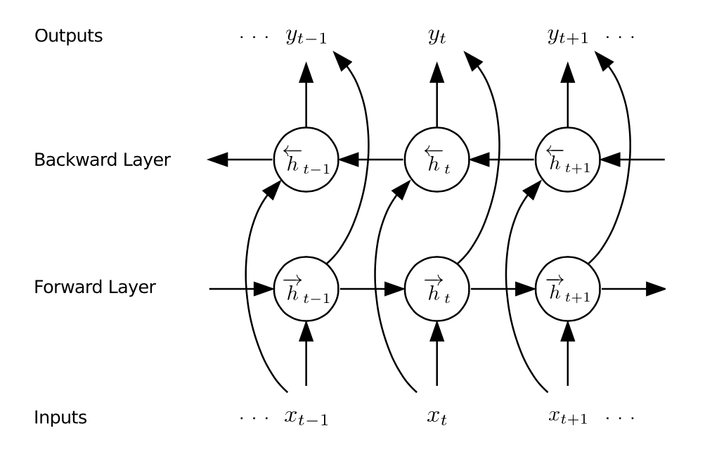

Machine Learning & Brain Imaging
selected projects
Sergey Plis, PhD
Professor, CS GSU
Administration
Syllabus
Assignments
Training Page GSU
Attendance
Key Keeper
What motivates our work
Learn from data how the brain works and breaks
The field's solution is to collect more data

Problem: large high dimensional data is not easy to understand
Desired Solution
automatically extract meaning from data
Semantic Segmentation

Model Interpretability
brain is highly dynamic

To Understand, Learn to Predict


Two types of eXplainable AI
Explain the data

Interpret the model

Graph as a glass-box layer
- To see through a black box model we need a window

- Our window is a graph, but we want the model to use it too

- For that, the graph needs to be differentiable \[ \mbox{softmax}(\bm{H}\bm{W}_Q\bm{W}_K\bm{H}^T), \bm{H}\mbox{ is (brain regions)} \times d \]
-
The now familiar
alignment matrix from the self-attention module
assembling a decen(n)t model
- 
-


Results: Interpretable glass-box layer for brains


Results: temporal attention captures dynamics

Zafar Iqbal
when there isn't enough data
Train via fMRI time reversal

Causal Learning
Multimodal Causal Learning?

the situation
Causal timescale $\ne$ Measurement timescale
$\approx100ms$

$???$

$\approx2s$
What causal inferences can be made in this situation?
we approach the task by a: proving theorems
If ${\cal G}^{1} \subseteq {\cal{J}}^1$, then $\forall
u [ {\cal G}^{u} \subseteq {\cal{J}}^u]$.
If ${\cal G}^{u} \nsubseteq {\cal H}$, then $\forall
{\bf E} [ ( {\cal G}^{1}_{\bf E} )^u \nsubseteq {\cal
H} ]$
If
$\forall u [ {\cal G}^{u} \nsubseteq {\cal H} ]$,
then $\forall {\bf E}, u [ ( {\cal G}^{1}_{\bf E}
)^u \nsubseteq {\cal H} ]$
we approach the task by b: developing algorithms

Debbratha Saha
Gaining insight about populations (w/ privacy)

Team that's working on this